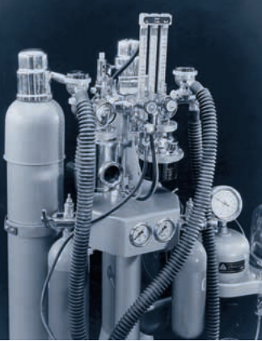

<!DOCTYPE html>
<html lang="de">
<head>
  <meta charset="UTF-8" />
  <meta name="viewport" content="width=device-width, initial-scale=1.0" />
  <title>Fabius · Dräger Narkoseapparat</title>
  <link rel="stylesheet" href="styles.css" />
</head>
<body>
  <header>
    <h1>Fabius(1965)</h1>
  </header>

  <main>
    <!-- 🧊 Fabius (Hauptseite, wie agrippa.html aufgebaut) -->
    <section class="device" id="fabius">
      <!-- Titelbild -->
      

      <p>
        <strong>Ein neues Kreissystem:</strong> Die Modellreihe <strong>Fabius</strong>, die Mitte der 1950er Jahre entstand,
        war ursprünglich für den militärischen Sanitätsdienst als tragbares Narkosegerät konzipiert (siehe auch unter
        „Narkoseapparate für Spezialzwecke“). Für den ambulant tätigen Anästhesisten wurde der Fabius als
        Koffer‑Narkosegerät angeboten. In der Klinikversion mit Fahrgestell verfügte Fabius ab 1956 über die Möglichkeit,
        mit verschiedenen Gasflaschen ausgerüstet zu werden.
      </p>
      <p>
        Sein wesentlicher Unterschied gegenüber anderen Dräger‑Apparaten lag im Kreissystem. Dieser <em>„Kreislaufteil II“</em>
        hatte einen Absorber, durch einen konischen Drehschieber während der Narkose ganz oder teilweise ausgeschaltet werden
        konnte. Das bedeutete: eine dosierbare, also Teilrückatmung war möglich. Die Konstrukteure hatten dieses Kreissystem so 
        ausgerichtet, daß es sich mit einfachen Mitteln umstellen ließ und damit als halbgeschlossenes oder halboffenes System mit
        Frischgas bzw. nach dem „Draw-over“-Prinzip mit Außenluft arbeitete.
      </p>

     
      <hr />


      <!-- Zweites Bild / Schema, falls vorhanden -->
      <figure>
        
        <figcaption>Der Dräger‑Narkoseapparat Fabius, ursprünglich als tragbares Gerät konzipiert von 1956.</figcaption>
      </figure>

    </section>

    <!-- 🧊 Fabius M (eigener Unterabschnitt) -->
    <section class="device" id="fabiusm">
      <h2>Fabius M (Feld groß)</h2>
      
      <p>
        Das Gerät <strong>Fabius M (Feld groß)</strong> ist ein vielseitige Narkoseapparat arbeitete auf Basis von Sauerstoff-Lachgas-Äther im Kreissystem.
      </p>
    <p><a href="/museum/narkosegeraet.html">🔙 Zurück zur Narkosegerät</a></p>

    </section>
  </main>

  <footer>
    <p>&copy; 2025 18medical‑Museum</p>
  </footer>
</body>

</html>


